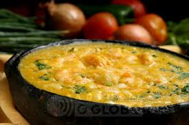

Shrimp bobo recipe
| Ingredients | Calories |
|---|---|
| 750g medium shrimps, peeled and sliced | 1,200 |
| 2 tablespoons of extra virgin olive oil | 180 |
| 1 onion, chopped | 42 |
| 1 green sweet pepper, diced | 21 |
| ½ bunch of chopped coriander | 46 |
| 3 tomatoes, seeded diced | 30 |
| 1 tablespoon of chopped ginger | 4 |
| 1 tablespoon of chopped nira | 0 |
| ½ chopped chili finger lady | 0 |
| 300ml shrimp broth | 150 |
| 450ml coconut milk | 450 |
| 400g mashed cassava | 500 |
| 70g ground cashew nuts | 426 |
| sugar and salt to taste | NA |
| 1 tablespoon of palm oil | 88 |
| Total | 3,141 |
Take the shrimp that have been peeled and season with salt and pepper, seasoning them just in time to lightly fry them. Heat a clay pot, put 2 tablespoons of olive oil and saute the shrimp.
In the same clay pot, saute onions, peppers and chili finger lady for about three minutes. Add tomato, ginger, coriander and Nira, sauté for three minutes. Add the strained shrimp broth and simmer until reduced by half.
Place 250 ml of coconut milk and boil for three minutes. Gradually add the mashed cassava and cook for five minutes, stirring constantly. Mix, then the rest of the coconut milk and crushed cashews, cooking for another five minutes. Season with salt to taste and a pinch of sugar to enhance the flavor.
Add the shrimp boil and remove from heat. Finish mixing palm oil and serve with rice